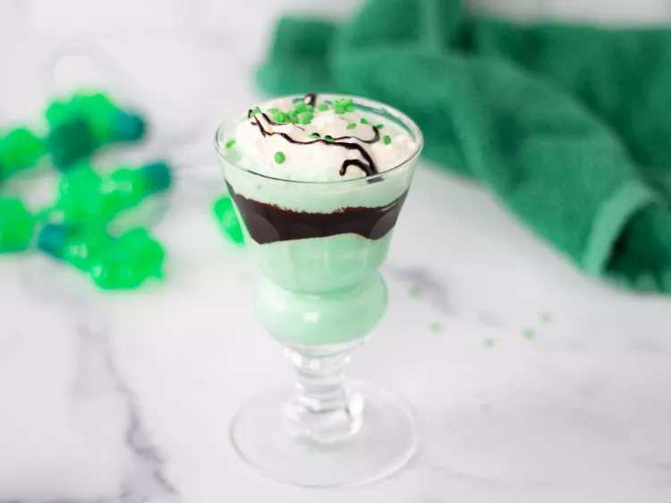

Back to Homepage
Shamrock Shake

Description
The Shamrock Shake is a classic minty milkshake that's perfect for St. Patrick's Day or any time you crave a refreshing treat. This creamy, cool drink features a blend of vanilla ice cream, mint extract, and a touch of green food coloring for that iconic shamrock hue. It's a simple yet delightful dessert that's sure to bring a smile to your face.
Enjoy this refreshing and easy to make treat, that will cool you down and put you in a festive mood!
Ingredients
- 2 cups Vanilla Ice Cream
- 1 cup Milk
- 1/4 teaspoon Peppermint Extract (or Mint Extract)
- 2-3 drops Green Food Coloring (or more, to your desired shade)
- Whipped Cream (for topping, optional)
- Maraschino Cherries (for topping, optional)
Steps
- Combine the vanilla ice cream, milk, and peppermint extract in a blender.
- Blend on medium speed until smooth and creamy.
- Add the green food coloring, a few drops at a time, and blend until you achieve the desired shamrock green color.
- Pour the shake into a tall glass.
- Top with whipped cream and a maraschino cherry, if desired.
- Serve immediately and enjoy!